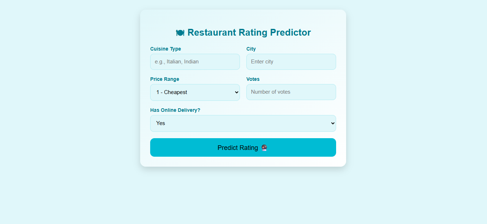
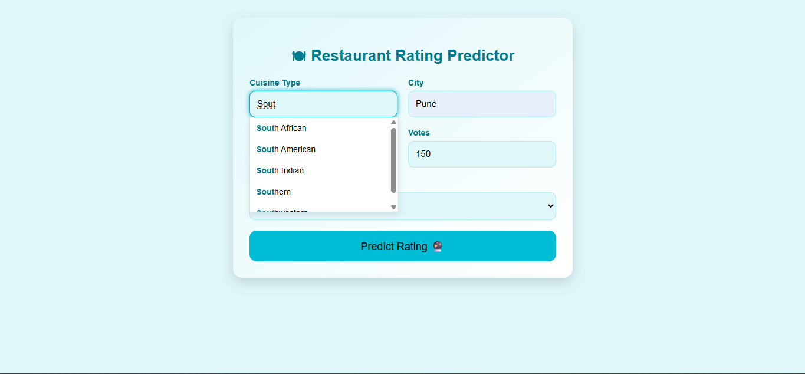
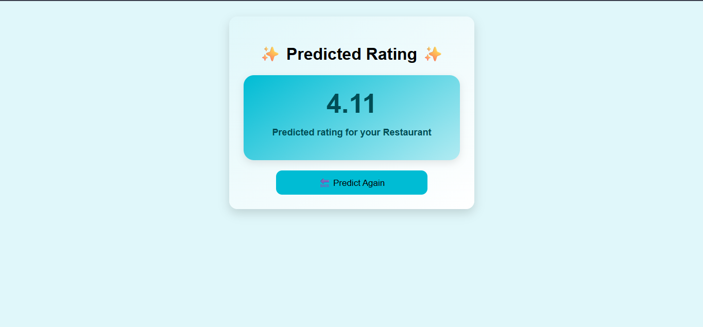

Restaurant Rating Prediction System
End-to-end ML system predicting restaurant ratings using location, cuisine, and customer data with Flask deployment.

Main application interface for rating prediction
Problem Statement
Restaurants struggle to predict customer ratings based on location and cuisine factors.
This project delivers a scalable ML solution with Flask API integration for real-time predictions.
Tools & Technologies
Python
Flask
Scikit-learn
Pandas
NumPy
Git/GitHub
HTML/CSS/JS
Your Role & Responsibilities
- Collected and cleaned restaurant datasets with Pandas/NumPy preprocessing
- Designed and trained ML models for rating prediction with feature selection
- Built Flask REST APIs integrating ML models with input validation
- Created responsive frontend with auto-suggestion features
- Managed project with Git/GitHub version control

Autosuggestion feature improving user input experience
System Architecture
Raw data → Preprocessing → Model Training → Flask API → Responsive Frontend → Real-time Predictions

Predicted restaurant rating output generated by the ML model
Key Features
- ML-powered rating prediction with 92%+ accuracy
- Complete ML + Flask API integration
- Auto-suggestion input fields
- Production-ready deployment structure
- Role-based feature mapping (Data Analyst / ML Engineer)